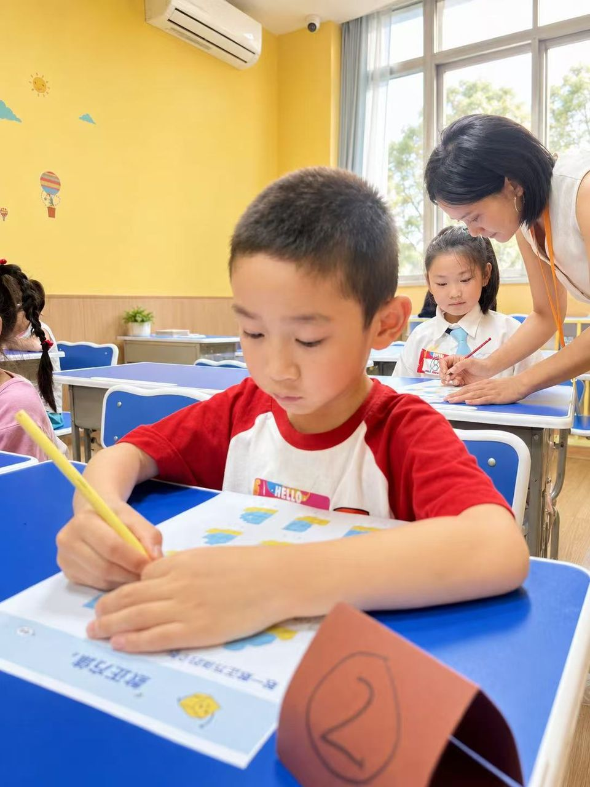

适龄课程，不以超前刷题为目标
优先关注课堂常规、专注倾听、任务意识、时间观念、正确握笔与自主整理。拼音、识字和数学思维更适合以感知、情境活动和游戏化启蒙展开，不把大量默写、反复抄写或做题量作为衡量进步的唯一标准。
第一部分 · 基础标准
这些是家长考察课程时可以具体询问、实地观察的方面。
优先关注课堂常规、专注倾听、任务意识、时间观念、正确握笔与自主整理。拼音、识字和数学思维更适合以感知、情境活动和游戏化启蒙展开，不把大量默写、反复抄写或做题量作为衡量进步的唯一标准。
适度模拟小学的上课、课间、举手发言、起立问好、排队和户外活动，让孩子熟悉学习场景。动静交替比长时间坐着更重要，具体时长应照顾儿童年龄和状态。
选校时除了看招生人数，也应了解实际师生比。本校区幼小衔接平均每班约10名孩子，由班主任统筹、分科教师参与教学；具体教师在班安排可向课程老师确认。
关注教师相关资质、培训经历与人员稳定性；老师应善于引导表达、耐心处理情绪，而不是打骂、羞辱、横向比较孩子或只盯着知识点。
实地了解教室通风、午休空间、用餐卫生、食谱公示、活动场地与监控及隐私管理规则。比宣传册的照片更重要的，是现场可核验的制度和执行情况。
有价值的沟通包含课堂状态、专注度、同伴互动、自理表现以及适合家庭执行的配合建议，而非只发作业截图或统一的表扬话术。
帮助孩子学习求助、轮流、表达情绪、面对挫折、发生冲突后修复关系。小学适应不仅看会多少字，也看孩子能否安心和同伴相处。
确认机构主体、许可或备案等适用资质信息，了解收费明细、合同条款、请假补课和退费流程。宣传与承诺应以可核验的公开信息、书面约定为准。
第二部分 · 深入了解
不只看课程表，还要理解日常教学中如何帮助孩子建立长期能力。
既教课堂秩序，也解释个人边界和社交规则。出现问题时引导孩子理解后果、表达歉意、修正行为，避免一味压制，也避免完全没有边界。
关注怕老师、怕犯错、不敢举手或不敢求助的孩子。采取耐心接纳、逐步适应、家校沟通等教育支持方式；遇到持续严重困扰时建议家长寻求专业帮助，而不是简单要求“不要哭”。
通过听短句抓关键、理解条件、多步骤指令等活动，练习“先取本子、再拿铅笔、完成后收好”，帮助孩子从反复催促转向理解任务。
重视“接收任务 → 动手完成 → 自己检查 → 整理提交”的完整闭环，练习主动启动、发现遗漏和收尾，而不只是知道正确答案。
对安静慢热、活跃好动、敏感怕错或容易争抢的孩子使用不同引导方法，让每个人都有被关注、被鼓励、被支持的机会。
在游戏中练习举手提问、上课被点名、排队、交作业、课间如厕喝水、文具丢失后求助以及同学发生矛盾后找老师等情境。
除了握笔、运笔，也可通过剪纸、串珠、手工和控笔游戏练习协调与耐力，避免让儿童过早长时间高强度书写。
用短任务与活动交替、明确目标和逐步增加难度，帮助孩子发现走神并尝试回到任务，而不是以“必须一动不动”为专注标准。
了解入学后常见的课堂指令、提问方式和学习任务，把重点放在适应能力上；不以提前学完一年级内容作为教学目标，避免削弱入学后的好奇心。
关注跳绳、平衡、耐力和户外运动；练习自主进餐、收拾餐具、珍惜食物与规律作息，帮助孩子适应集体生活。
家长应在报名前看到完整的书面安排，确认适应期、请假补课、调班以及退费条件。合理灵活的服务应以真实执行及合同条款为准，不能仅凭口头介绍。
选校避坑
第三部分 · 两类课程都适用
班级同伴结构、家长开放日、成长档案、卫生与应急管理，同样值得在报名之前问清楚。
课堂实景
以下照片均拍摄于本校区：真实的课堂状态、专注力练习与体能活动，欢迎预约到校实地了解。




家长问答
回答基于上述教育理念，具体课程与校区服务请进一步咨询。
更值得优先培养课堂适应、听指令、完成任务、自理和同伴相处能力。适量的语言和数学感知可以融入活动，但不应以提前学完教材或大量刷题为主要目标。
不建议把长时间静坐当作专注力的全部。短任务、动静交替、明确步骤和逐步延长投入时间更符合低龄儿童的需要。
建议核实实际师生配置、教师经验、午休用餐、场地安全、家庭反馈、请假退费规定，以及对应资质。
校区面向5—6岁、中大班阶段，平均每班约10名孩子，由班主任统筹、分科教师参与教学。原始课程资料和全年班课表可在本网站查看；任课和当期班型可联系周老师了解。
校区课程资料
托马斯学习馆王家湾人信汇校区提供的课程、师资分工和日常配套说明。
面向5—6岁、中大班阶段，介绍托马斯人信汇校区约10人班、分科配师、习惯培养、游戏化启蒙与全年班作息。
阅读全文 →课表与作息查看托马斯人信汇校区全年班周课表：8:10入校、9:20课间操、11:30午餐、午间活动与午休、16:10整理离馆。
阅读全文 →习惯与成长托马斯人信汇校区幼小衔接资料：倾听指令、任务意识、整理书包、喝水如厕、同伴相处和情绪表达，不以大量默写刷题为主要方式。
阅读全文 →招生咨询
适合的课程因孩子年龄、基础与班级安排而异。可联系老师了解当期教学安排、收费及开放参观时间。
武汉市汉阳区龙兴西街人信汇F地块二期7幢1—2层6商号（人信汇二期一号门旁）